library(tidyverse)
library(ggpubr)
data(mpg)5 Bar charts
5.0.0.1 Set up
Every row in mpg is a car, every column a feature of that car. mpg stands for miles per gallon.
head(mpg)# A tibble: 6 × 11
manufacturer model displ year cyl trans drv cty hwy fl class
<chr> <chr> <dbl> <int> <int> <chr> <chr> <int> <int> <chr> <chr>
1 audi a4 1.8 1999 4 auto(l5) f 18 29 p compa…
2 audi a4 1.8 1999 4 manual(m5) f 21 29 p compa…
3 audi a4 2 2008 4 manual(m6) f 20 31 p compa…
4 audi a4 2 2008 4 auto(av) f 21 30 p compa…
5 audi a4 2.8 1999 6 auto(l5) f 16 26 p compa…
6 audi a4 2.8 1999 6 manual(m5) f 18 26 p compa…5.1 Basics of bar charts
These uses the geom_col() function to display values in the data, geom_bar() to count the cases in a group.
In this example, average highway miles per gallon (hwy) is displayed by a the type of car (class).
(hwy_class <- mpg %>%
group_by(class) %>%
summarise_at(vars(hwy), list(average_hwy= ~round(mean(.x), digits = 1))))# A tibble: 7 × 2
class average_hwy
<chr> <dbl>
1 2seater 24.8
2 compact 28.3
3 midsize 27.3
4 minivan 22.4
5 pickup 16.9
6 subcompact 28.1
7 suv 18.15.1.1 A basic bar chart
That data is then fed to ggplot to produce a simple bar chart.
ggplot(data=hwy_class) +
geom_col(mapping=aes(x=class, y=average_hwy))5.1.2 A horizontal bar chart
ggplot(data=hwy_class) +
geom_col(mapping=aes(x=class, y=average_hwy)) +
coord_flip()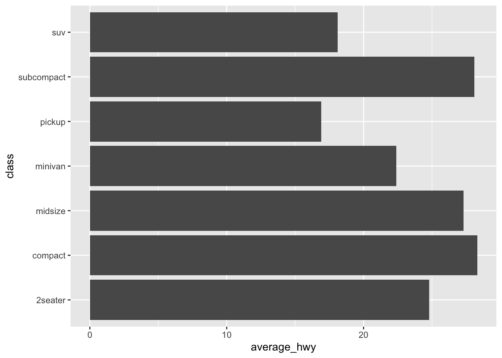
5.2 Amend fill colour
5.2.0.1 Standard gglot colours
plot <- ggplot(data=hwy_class) +
aes(x=class, y=average_hwy, fill=class) +
geom_col(width=0.5, colour = "black") +
theme_minimal()
plot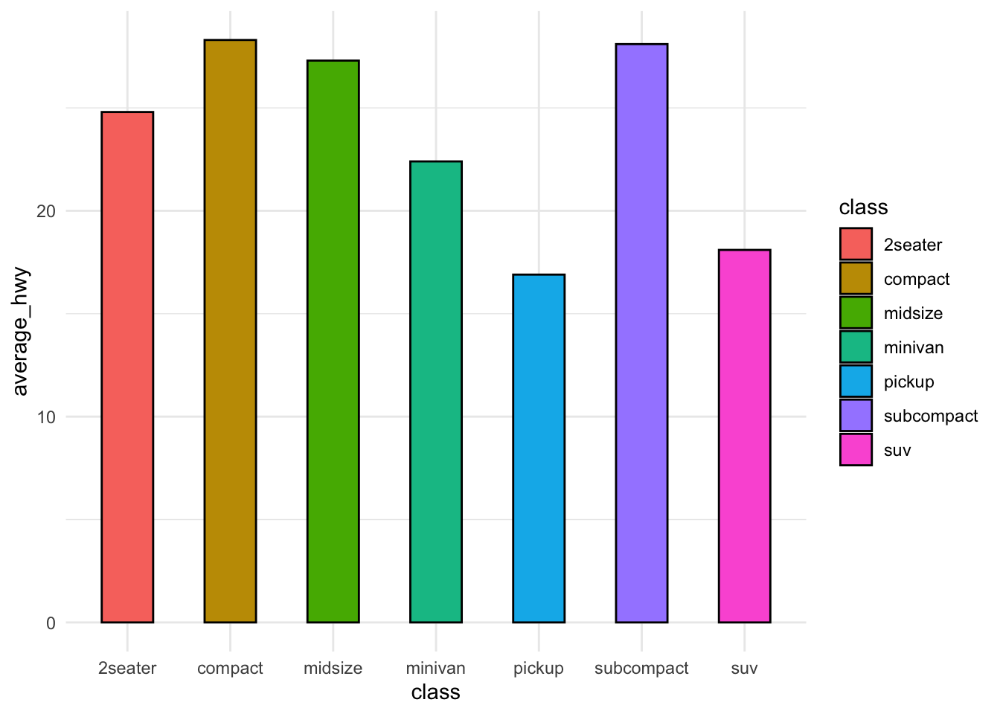
5.2.0.2 Other options
ggarrange(
plot + scale_fill_grey() + theme(legend.position="none"),
plot + scale_fill_brewer(palette="PuRd") + theme(legend.position="none"),
plot + scale_fill_brewer(palette="Blues") + theme(legend.position="none"),
ncol = 1, nrow = 3)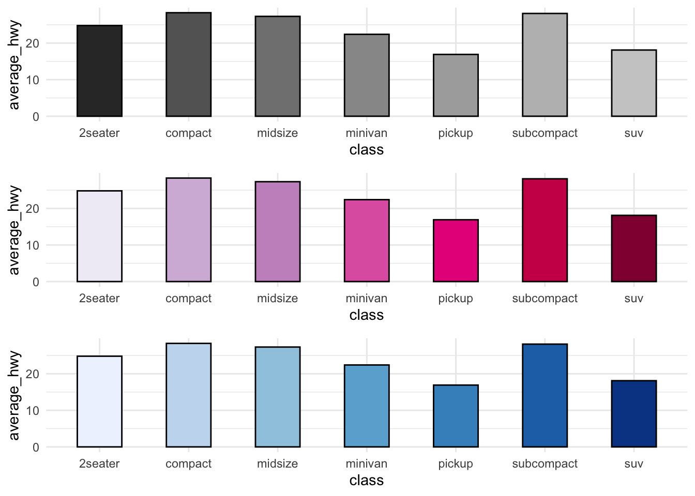
5.2.1 Fill by another variable
(hwy_class_year <- mpg %>%
group_by(class, year) %>%
summarise_at(vars(hwy), list(average_hwy_year = ~round(mean(.x), 1))))# A tibble: 14 × 3
# Groups: class [7]
class year average_hwy_year
<chr> <int> <dbl>
1 2seater 1999 24.5
2 2seater 2008 25
3 compact 1999 27.9
4 compact 2008 28.7
5 midsize 1999 26.5
6 midsize 2008 28
7 minivan 1999 22.5
8 minivan 2008 22.2
9 pickup 1999 16.8
10 pickup 2008 16.9
11 subcompact 1999 29
12 subcompact 2008 27.1
13 suv 1999 17.6
14 suv 2008 18.6The second variable is now the fill colour.
ggplot(data=hwy_class_year, aes(x=class, y=average_hwy_year, fill=year)) +
geom_col(width=0.5, colour="black")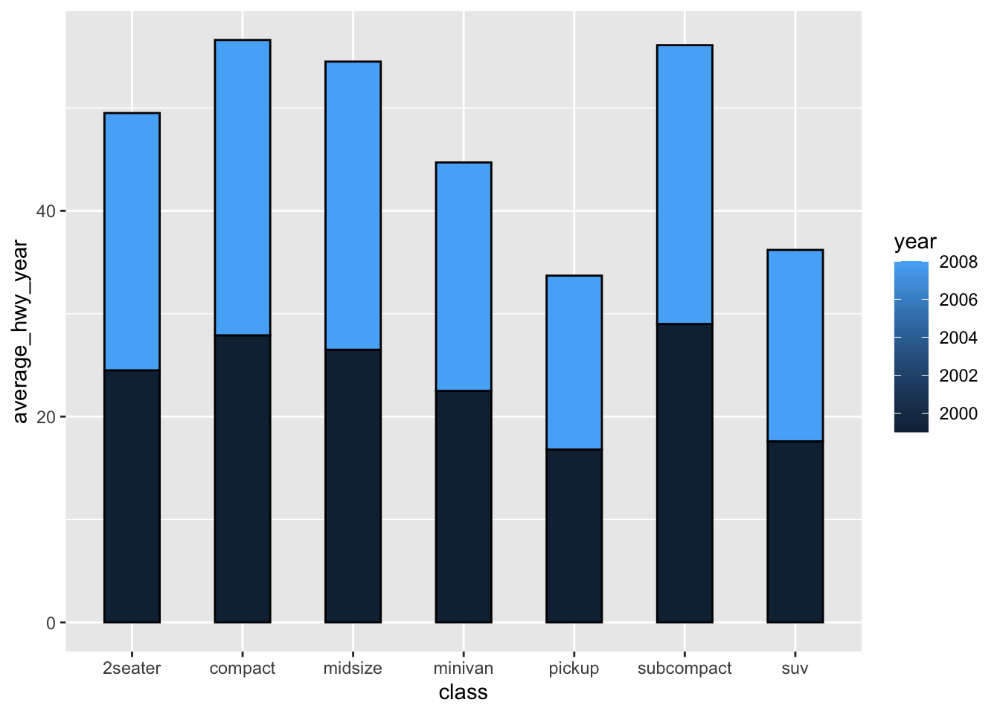
The position argument (setting dodge2) moves the bars to appear alongside each other rather than stacked.
plot <- ggplot(data=hwy_class_year, aes(x=class, y=average_hwy_year, fill=year)) +
geom_bar(stat="identity", position = "dodge2")
plot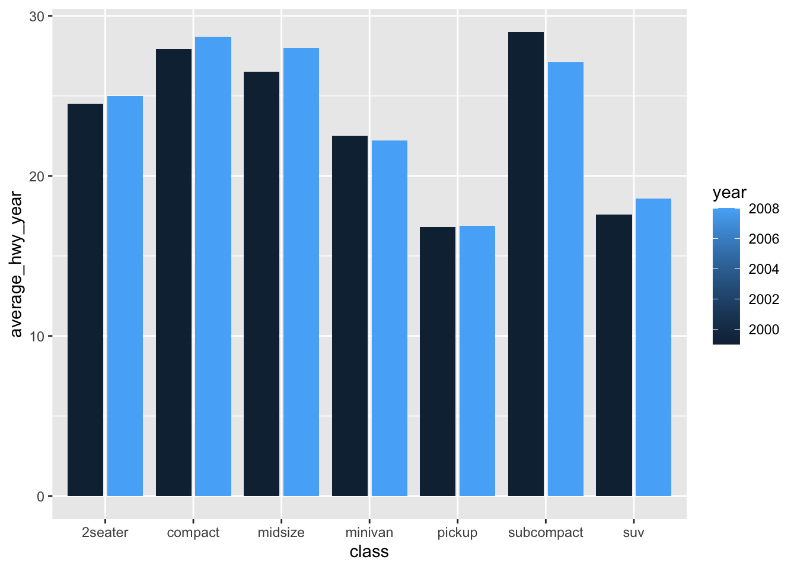
5.3 Adding labels to data
The geom_text function is what adds the labels:
- had to move the aes() bit out of the geom_bar() bit to make this work.
- the vjust bit moves it above and below the bar. A lower minus number would be higher above the bar.
ggplot(data=hwy_class) +
aes(x=class, y=average_hwy) +
geom_bar(stat="identity") +
geom_text(aes(label=average_hwy), vjust=-1)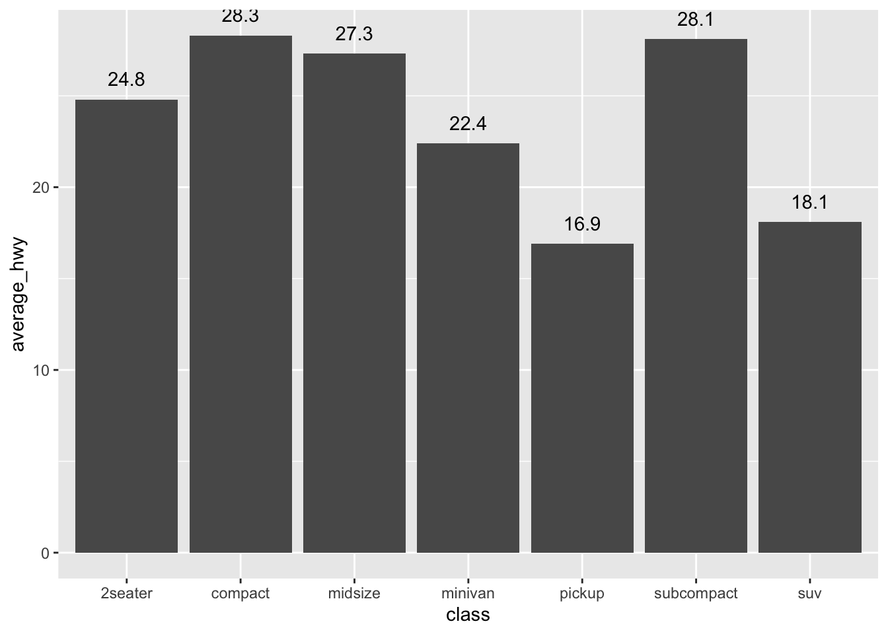
Here the label is below the bar, vjust=1.5. The colour has been switched to white and the size increased also.
ggplot(data=hwy_class) +
aes(x=class, y=average_hwy) +
geom_bar(stat="identity") +
geom_text(aes(label=average_hwy), vjust=1.5, colour="white", size=6)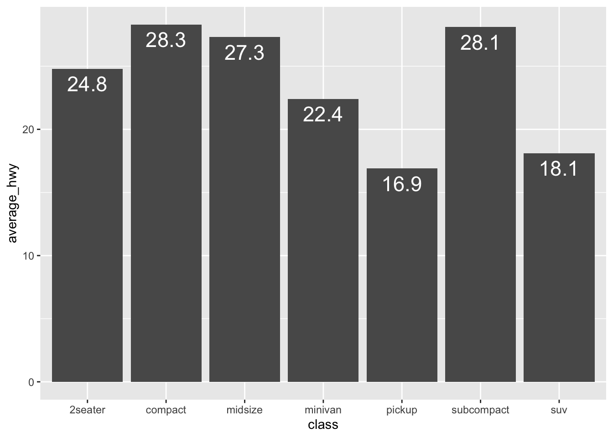
5.3.0.1 Adding them to our dodged plot above.
We also have to ‘dodge’ the position of the labels within geom_text, again in the position argument.
plot +
geom_text(aes(label=average_hwy_year), vjust=1.6, color="white",
position = position_dodge2(0.9), size=3.5)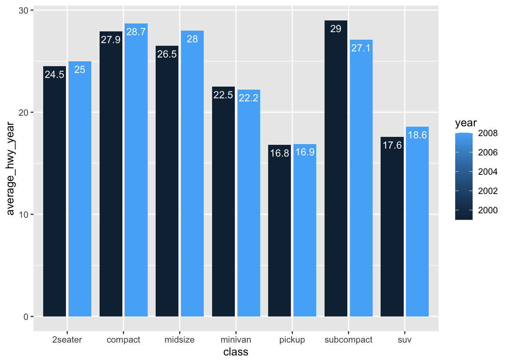
5.4 Other formatting
5.4.1 Bar width
Amend bar width within geom_col argument with ‘width’.
The default is 0.9, smaller values make bars smaller. Max = 1 and removes all space between bars.
If you make the entire graph wider or narrower, the bar dimensions will scale proportionally.
more_space <- ggplot(data=hwy_class) +
geom_col(mapping=aes(x=class, y=average_hwy), width=0.9)
less_space <- ggplot(data=hwy_class) +
geom_col(mapping=aes(x=class, y=average_hwy), width=0.5)
ggarrange(more_space, less_space, ncol = 1)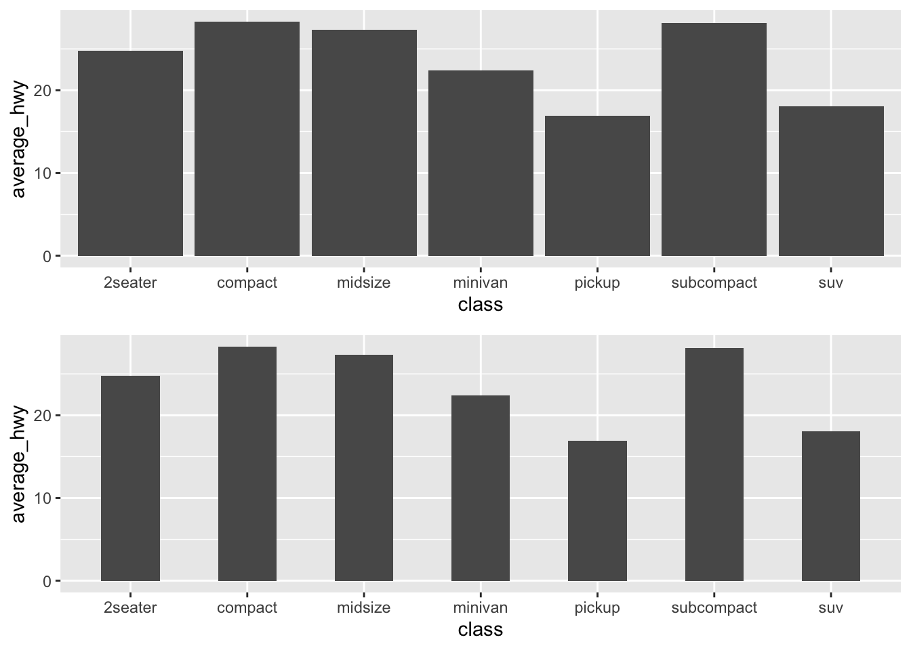
5.4.2 Change colours
In the below the colour affects only the outline, without the fill the bars would be dark grey still.
ggplot(data=hwy_class) +
geom_col(mapping=aes(x=class, y=average_hwy), colour="blue", fill="white", width = 0.5)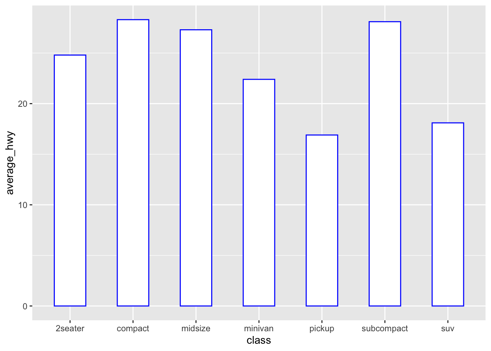
Or bar colour can be changed by groups.
- Add colour=var, where var is the variable you want to vary the colours by.
ggplot(data=hwy_class) +
aes(x=class, y=average_hwy, colour=class) +
geom_col(fill="white", width=0.5) 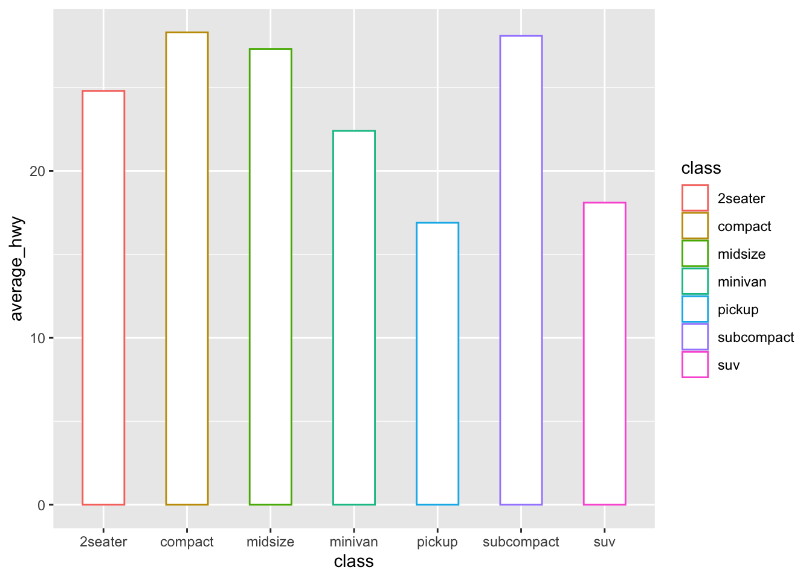
5.4.3 Apply themes
p <- ggplot(data=hwy_class) +
geom_col(mapping=aes(x=class, y=average_hwy), fill="steelblue")
p + theme_minimal()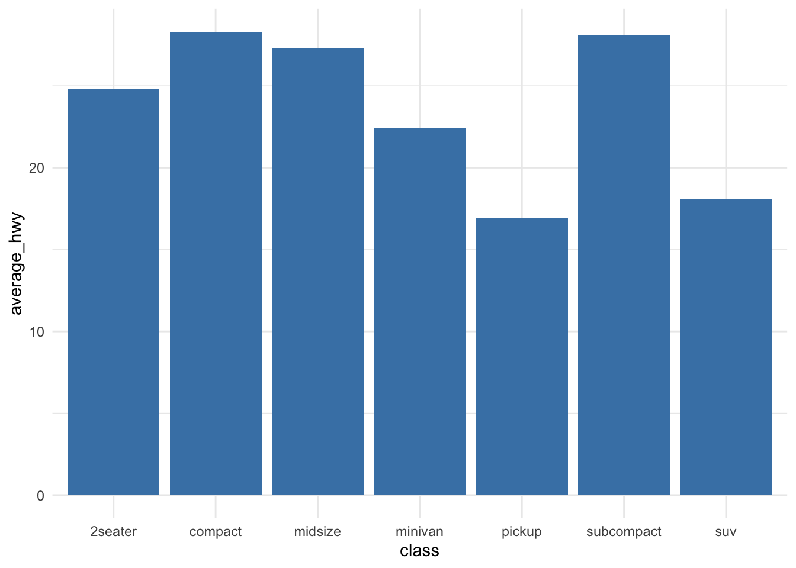
5.5 Select categories to show
You can also select which items to show:
ggplot(data=hwy_class) +
geom_col(mapping=aes(x=class, y=average_hwy, label=average_hwy)) +
scale_x_discrete(limits=c("suv", "minivan", "pickup"))Warning in geom_col(mapping = aes(x = class, y = average_hwy, label =
average_hwy)): Ignoring unknown aesthetics: labelWarning: Removed 4 rows containing missing values or values outside the scale range
(`geom_col()`).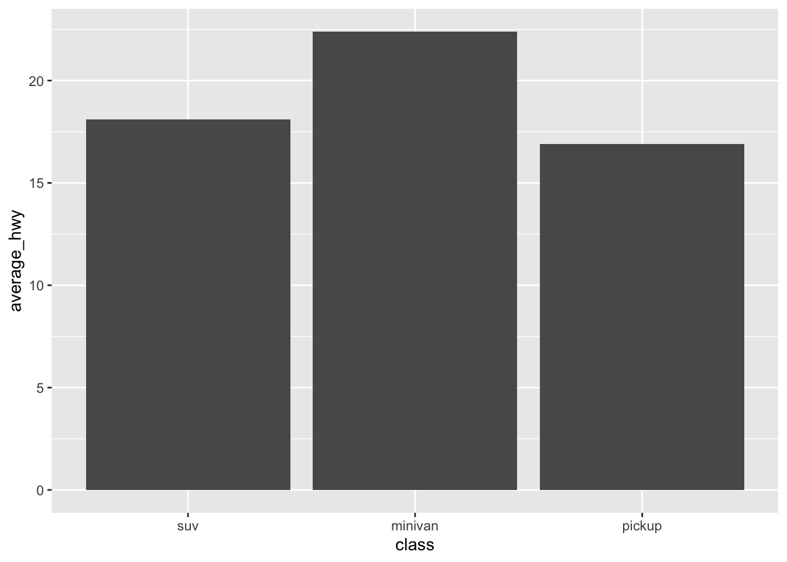
5.6 Alternative statistics
5.6.0.1 Barplot of counts
Similar to a histogram, the stat=“bin” command allows ggplot() to work like table(), but specifically for numeric values.
ggplot(data=mpg) +
aes(x=cyl) +
geom_bar(stat="bin")`stat_bin()` using `bins = 30`. Pick better value `binwidth`.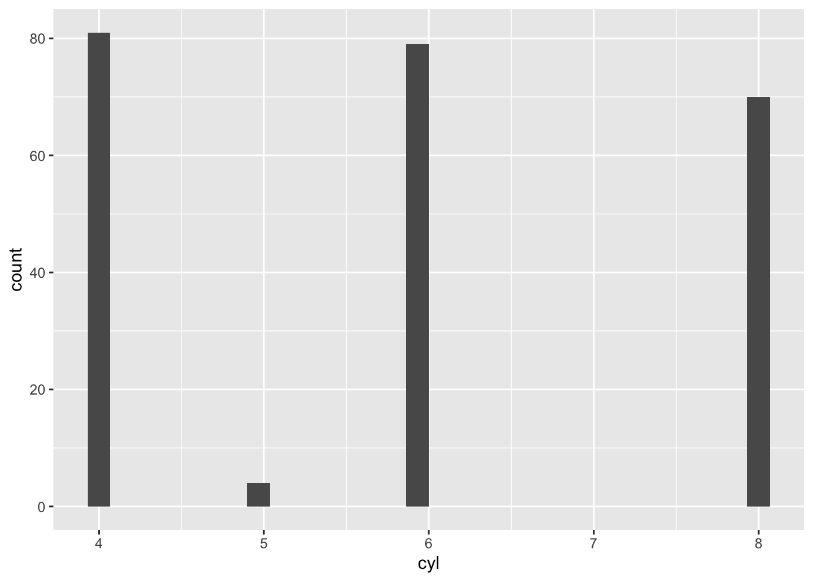
Or with character values, try geom_bar without an argument.
ggplot(data=mpg) +
aes(x=class) +
geom_bar()
5.7 Worked plots
library(haven)
library(labelled)
bsa <- read_sav("/Users/joecrowley/R/Data/BSA Teaching Data/spss/spss24/bsa2017_for_ukda.sav")
# names(bsa)5.7.1 Bar chart for 1 way crossbreak (or for a frequency table)
bsa %>% count(as_factor(leftrigh, levels = "both"))# A tibble: 32 × 2
`as_factor(leftrigh, levels = "both")` n
<fct> <int>
1 [1] left 138
2 1.2 77
3 1.4 112
4 1.5 1
5 1.6 131
6 1.66666666666667 1
7 1.75 3
8 1.8 161
9 2 343
10 2.2 321
# ℹ 22 more rows(leftrigh <- bsa %>%
mutate(dolefidl = as_factor(dolefidl),
leftrigh = case_when(leftrigh == 9 ~ NA,
TRUE ~ zap_labels(leftrigh))) %>%
group_by(dolefidl) %>%
summarise(leftrigh = mean(leftrigh, na.rm = TRUE),
n = n())) # A tibble: 7 × 3
dolefidl leftrigh n
<fct> <dbl> <int>
1 Agree strongly 2.36 172
2 Agree 2.50 612
3 Neither agree nor disagree 2.64 1170
4 Disagree 2.55 967
5 Disagree strongly 2.07 265
6 Not answered 2.13 72
7 <NA> NaN 730dynamic_str_wrap <- function(text, plot_width = 7, num_labels = 1, char_width = 0.1, margin = 0.1) {
max_label_width <- (plot_width * (1 - margin)) / num_labels
max_chars <- max_label_width / char_width
str_wrap(text, width = floor(max_chars))
}
wrap_titles <- function(title, plot_width = 7, char_width = 0.09) {
max_chars <- floor(plot_width / char_width)
wrapped_title <- str_wrap(title, width = max_chars)
return(wrapped_title)
}
num_labels <- length(levels(fct_drop(leftrigh$dolefidl)))
x_lab <- var_label(bsa[[names(leftrigh[1])]])
x_lab_wrap <- wrap_titles(x_lab)
y_lab <- var_label(bsa[[names(leftrigh[2])]])
y_lab_wrap <- wrap_titles(y_lab, plot_width = 5)
title <- paste0(y_lab, " by ", x_lab)
title_wrap <- wrap_titles(title)
buffer <- mean(leftrigh$leftrigh, na.rm = TRUE) / 4
ylim <- c(0, ceiling(max(leftrigh$leftrigh, na.rm = TRUE) + buffer))
(plot <- leftrigh %>%
filter(!is.na(dolefidl)) %>%
mutate(dolefidl = map_chr(as.character(dolefidl), dynamic_str_wrap, plot_width = 7, num_labels = num_labels, char_width = 0.08, margin = 0.1)) %>%
mutate(dolefidl = factor(dolefidl, levels = unique(dolefidl))) %>%
ggplot(aes(x = dolefidl, y = leftrigh)) +
geom_col() +
geom_text(aes(label = round(leftrigh, 1)), vjust = -1.5, size = 11, size.unit = "pt") +
theme_gray() +
labs(title = title_wrap,
x = x_lab_wrap,
y = y_lab_wrap) +
coord_cartesian(ylim = ylim) +
theme(
plot.margin = margin(1,1,1,1),
text = element_text(size = 11), # This seems to have no effect???
plot.title = element_text(size = 13, face = "bold"),
axis.title = element_text(size = 11, face = "bold"),
axis.text.x = element_text(margin = margin(b = 10), size = 11),
axis.text.y = element_text(margin = margin(l = 10), size = 11)
)) 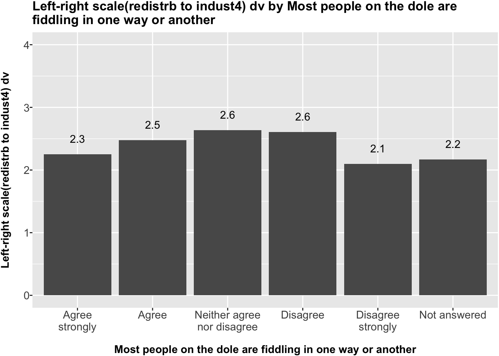
# Retrospectivly add colour
plot + geom_col(fill = "#619CFF") # ggplot blue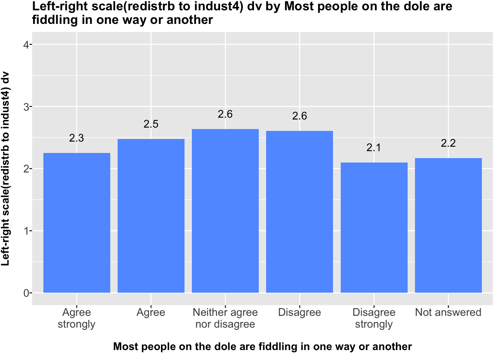
plot + geom_col(fill = "#7082d4") # natcen blue 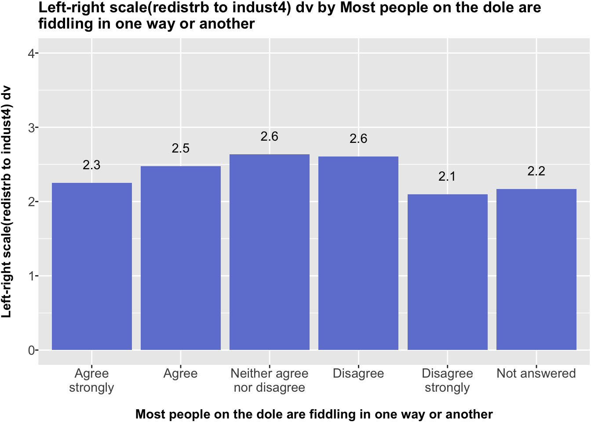
plot + geom_col(aes(fill = dolefidl)) +
theme(legend.position = "none")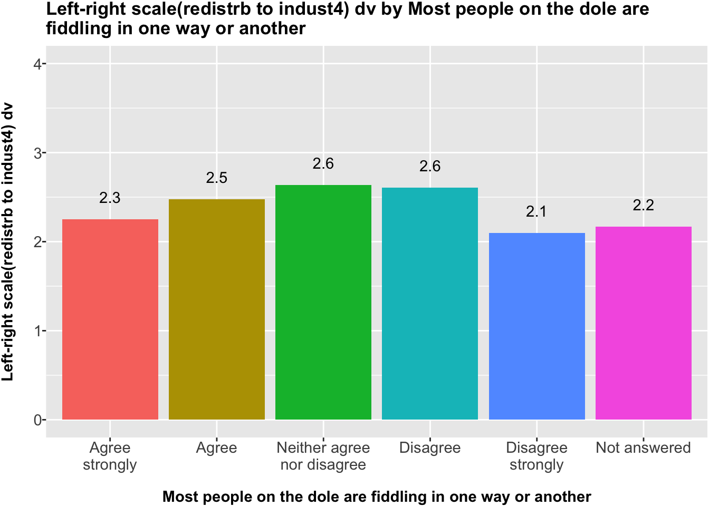
plot +
geom_col(aes(fill = dolefidl)) +
scale_fill_brewer(palette = "Set2") +
theme(legend.position = "none")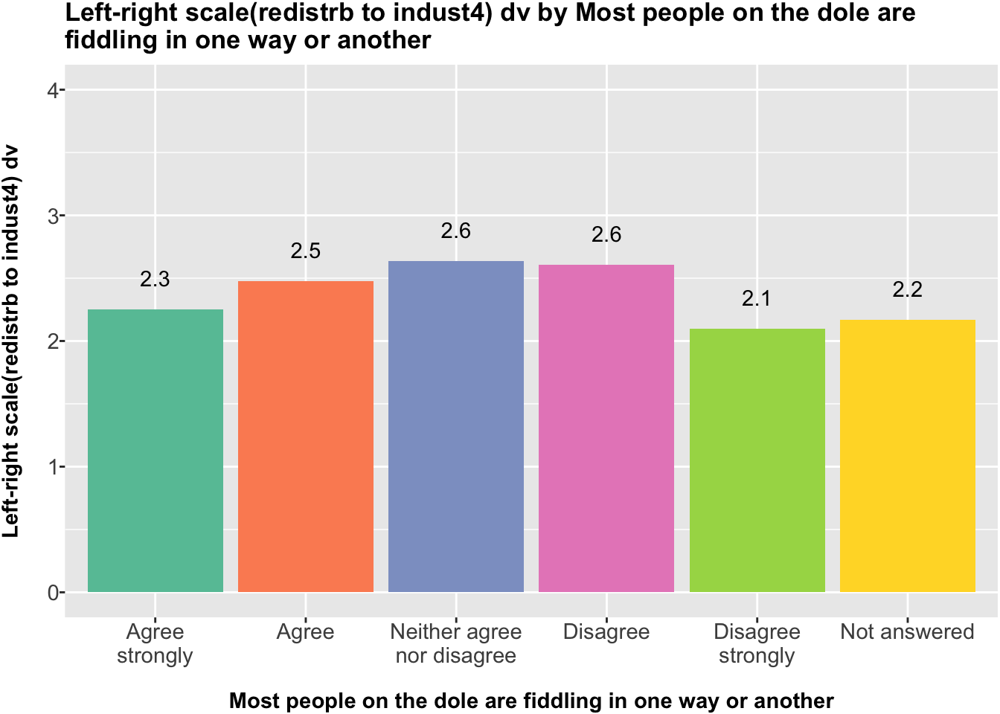
5.7.2 Bar chart for 2 way crosstab - clustered
(leftrigh_sex <- bsa %>%
mutate(dolefidl = as_factor(dolefidl),
leftrigh = case_when(leftrigh == 9 ~ NA,
TRUE ~ zap_labels(leftrigh)),
sex = as_factor(Rsex)) %>%
group_by(sex, dolefidl) %>%
summarise(leftrigh = mean(leftrigh, na.rm = TRUE),
n = n())) `summarise()` has grouped output by 'sex'. You can override using the `.groups`
argument.# A tibble: 14 × 4
# Groups: sex [2]
sex dolefidl leftrigh n
<fct> <fct> <dbl> <int>
1 Male Agree strongly 2.20 87
2 Male Agree 2.49 281
3 Male Neither agree nor disagree 2.62 505
4 Male Disagree 2.54 434
5 Male Disagree strongly 2.03 117
6 Male Not answered 1.87 32
7 Male <NA> NaN 350
8 Female Agree strongly 2.52 85
9 Female Agree 2.51 331
10 Female Neither agree nor disagree 2.66 665
11 Female Disagree 2.56 533
12 Female Disagree strongly 2.10 148
13 Female Not answered 2.35 40
14 Female <NA> NaN 380num_labels <- length(levels(fct_drop(leftrigh_sex$dolefidl)))
x_lab <- var_label(bsa[[names(leftrigh_sex[2])]])
x_lab_wrap <- wrap_titles(x_lab)
y_lab <- var_label(bsa[[names(leftrigh_sex[3])]])
y_lab_wrap <- wrap_titles(y_lab, plot_width = 5)
title <- paste0(y_lab, " by ", x_lab)
title_wrap <- wrap_titles(title)
buffer <- mean(leftrigh_sex$leftrigh, na.rm = TRUE) / 4
ylim <- c(0, ceiling(max(leftrigh_sex$leftrigh, na.rm = TRUE) + buffer))
(plot <- leftrigh_sex %>%
filter(!is.na(dolefidl)) %>%
mutate(dolefidl = map_chr(as.character(dolefidl), dynamic_str_wrap, plot_width = 7, num_labels = num_labels, char_width = 0.08, margin = 0.1)) %>%
mutate(dolefidl = factor(dolefidl, levels = unique(dolefidl))) %>%
ggplot(aes(x = dolefidl, y = leftrigh, fill = sex)) +
geom_col(position = "dodge2") +
geom_text(aes(label = round(leftrigh, 1)), position = position_dodge2(0.9), vjust = -1, size = 11, size.unit = "pt") +
theme_gray() +
labs(title = title_wrap,
x = x_lab_wrap,
y = y_lab_wrap) +
coord_cartesian(ylim = ylim) +
theme(
plot.margin = margin(1,1,1,1),
text = element_text(size = 11), # This seems to have no effect???
plot.title = element_text(size = 13, face = "bold"),
axis.title = element_text(size = 11, face = "bold"),
axis.text.x = element_text(margin = margin(b = 10), size = 11),
axis.text.y = element_text(margin = margin(l = 10), size = 11),
legend.position = "bottom",
legend.text = element_text(size = 11),
legend.title = element_text(size = 11, face = "bold"),
legend.margin = unit(0.1, "cm")
)) Warning: `legend.margin` must be specified using `margin()`
ℹ For the old behavior use `legend.spacing`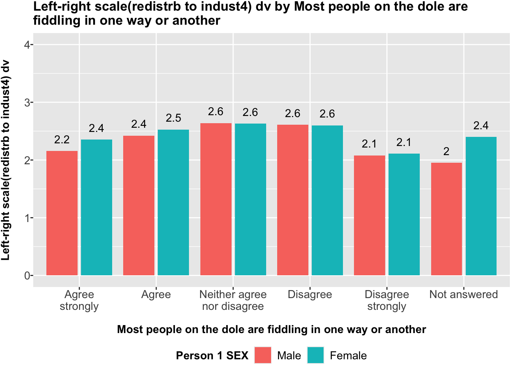
# Retrospectivly amend colour
plot + scale_fill_brewer(palette = "Set2")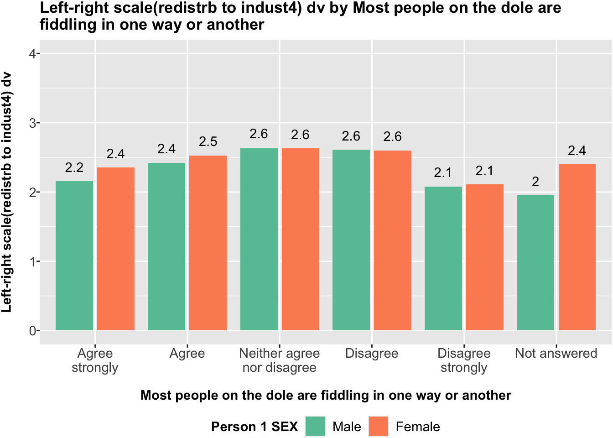
plot + scale_fill_brewer(palette = "Accent")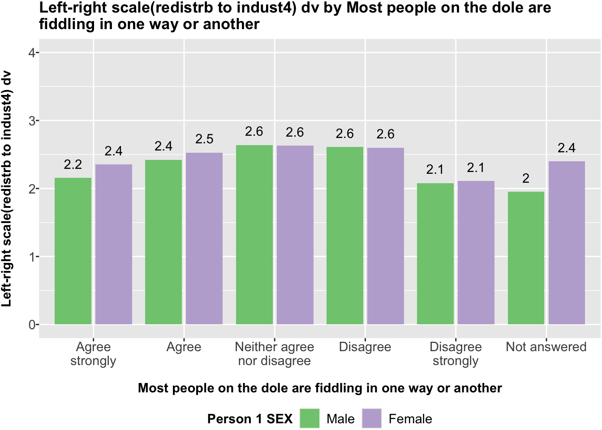
plot + scale_fill_brewer(palette = "Pastel1")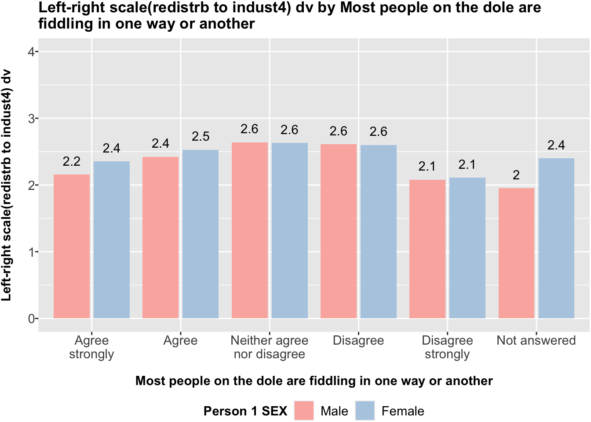
plot + scale_fill_brewer(palette = "Paired")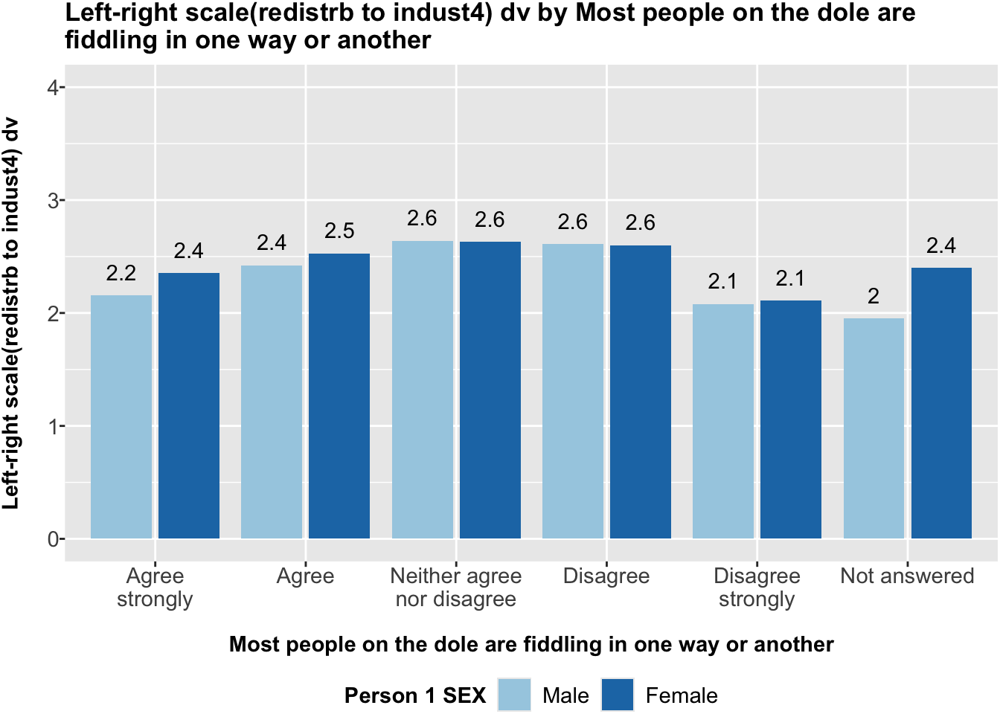
5.7.3 Drawing in NatCen colours
nc_colours <- data.frame(
blue = c("#7082d4", "#8f99de", "#abb5e5", "#c7cced", "#e3e5f5"),
pink = c("#f25c91", "#f57da8", "#f79ebf", "#fabfd4", "#fcdee8"),
mint = c("#00ab85", "#33bd9e", "#66ccb5", "#99decf", "#ccede8"),
purple = c("#b053a1", "#bf75b5", "#d199c7", "#debad9", "#f0deed"),
orange = c("#ff8200", "#ff9c33", "#ffb566", "#ffcc99", "#ffe5cc"))
nbl <- nc_colours[,1] # extract blue
npi <- nc_colours[,2]
nmg <- nc_colours[,3]
npu <- nc_colours[,4]
nor <- nc_colours[,5]
nbl_oppo2 <- nc_colours[c(1,4),1] # extract blue
npi_oppo2 <- nc_colours[c(1,4),2]
nmg_oppo2 <- nc_colours[c(1,4),3]
npu_oppo2 <- nc_colours[c(1,4),4]
nor_oppo2 <- nc_colours[c(1,4),5]
nbl_seq3 <- nc_colours[c(1,3,5),1] # extract blue
npi_seq3 <- nc_colours[c(1,3,5),2]
nmg_seq3 <- nc_colours[c(1,3,5),3]
npu_seq3 <- nc_colours[c(1,3,5),4]
nor_seq3 <- nc_colours[c(1,3,5),5]
ncl_5to1 <- unlist(c(as.vector(nc_colours[1,]), as.vector(nc_colours[2,]), as.vector(nc_colours[3,]), as.vector(nc_colours[4,]), as.vector(nc_colours[5,]))) %>% unname
ncl_oppo2 <- nc_colours %>% slice(1,4) %>% pivot_longer(cols = everything()) %>% arrange(name) %>% select(-name) %>% as_vector() %>% unname
ncl_seq3 <- nc_colours %>% slice(1,3,5) %>% pivot_longer(cols = everything()) %>% arrange(name) %>% select(-name) %>% as_vector() %>% unname
# Two functions for diverging colours, Natcen...
scale_fill_ga_diverging <- function(low_color = npi[1],
medium_color = "white",
high_color = nmg[1]) {
scale_fill_gradient2(low = low_color,
mid = medium_color,
high = high_color)
}
scale_fill_ga_diverging <- function(low_color = nbl[1,5],
medium_color = "white",
high_color = nor[1,1]) {
scale_fill_gradient2(low = low_color,
mid = medium_color,
high = high_color)
}
plot + scale_fill_manual(values = ncl_oppo2[7:8])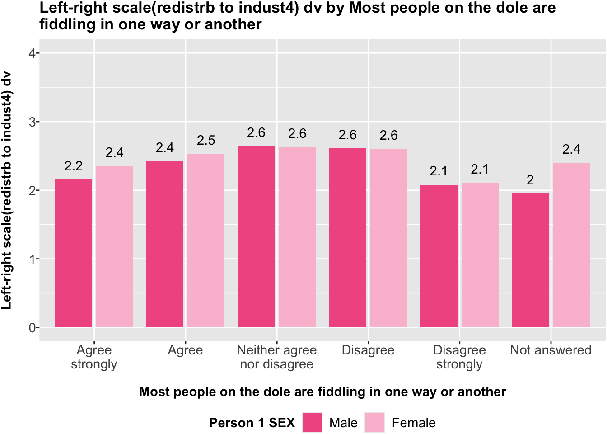
plot + scale_fill_manual(values = nbl)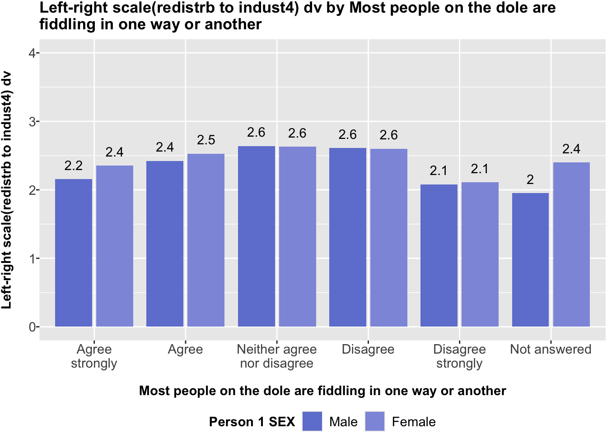
plot + scale_fill_manual(values = nbl_oppo2)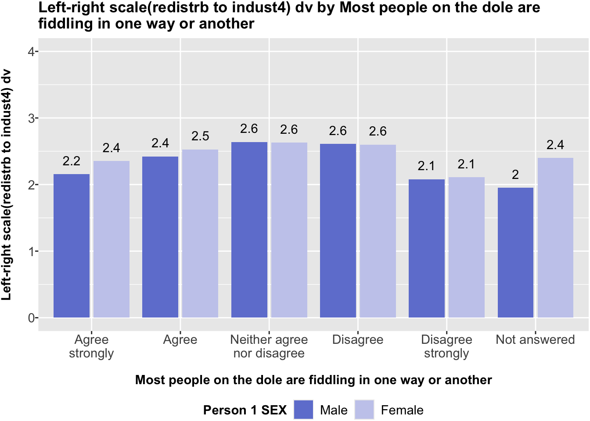
plot + scale_fill_manual(values = ncl_5to1)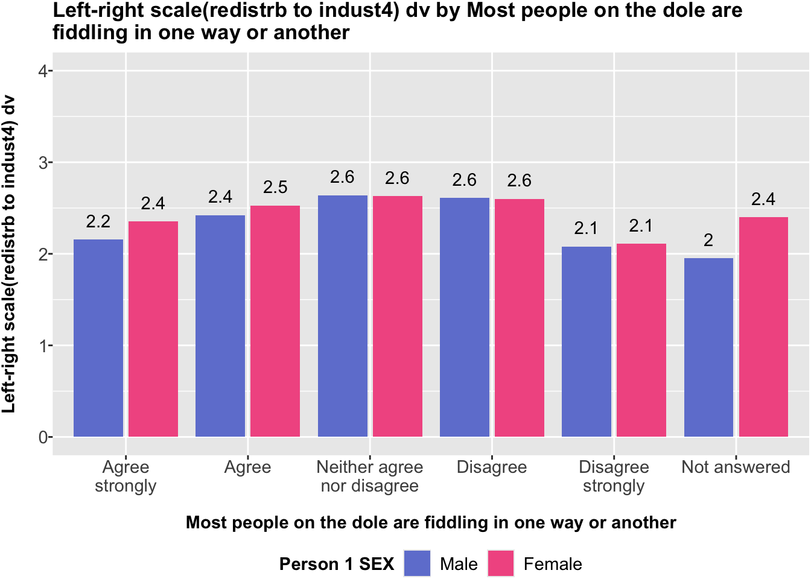
5.7.4 Bar chart for 1 way crosstab - stack
dolefidl_x_leftrig2 <- bsa %>%
mutate(dolefidl = as_factor(dolefidl),
leftrig2 = as_factor(leftrig2),
sex = as_factor(Rsex)) %>%
count(leftrig2, dolefidl) %>%
filter(!is.na(leftrig2) & !is.na(dolefidl)) %>%
group_by(leftrig2) %>%
mutate(p = 100*(n / sum(n)),
psum = sum(p))
dolefidl_x_leftrig2# A tibble: 23 × 5
# Groups: leftrig2 [4]
leftrig2 dolefidl n p psum
<fct> <fct> <int> <dbl> <dbl>
1 left Agree strongly 111 6.68 100
2 left Agree 329 19.8 100
3 left Neither agree nor disagree 510 30.7 100
4 left Disagree 494 29.7 100
5 left Disagree strongly 191 11.5 100
6 left Not answered 27 1.62 100
7 neither Agree strongly 34 2.88 100
8 neither Agree 221 18.7 100
9 neither Neither agree nor disagree 525 44.5 100
10 neither Disagree 344 29.1 100
# ℹ 13 more rowsnum_labels <- length(levels(fct_drop(dolefidl_x_leftrig2$leftrig2)))
x_lab <- var_label(bsa[[names(dolefidl_x_leftrig2[1])]])
x_lab_wrap <- wrap_titles(x_lab)
y_lab <- var_label(bsa[[names(dolefidl_x_leftrig2[2])]])
y_lab_wrap <- wrap_titles(y_lab, plot_width = 5)
title <- paste0(y_lab, " by ", x_lab)
title_wrap <- wrap_titles(title)
ylim <- c(0, 100)
dolefidl_x_leftrig2 %>%
ggplot(aes(x = leftrig2, y = p, fill = dolefidl)) +
geom_col() +
coord_flip()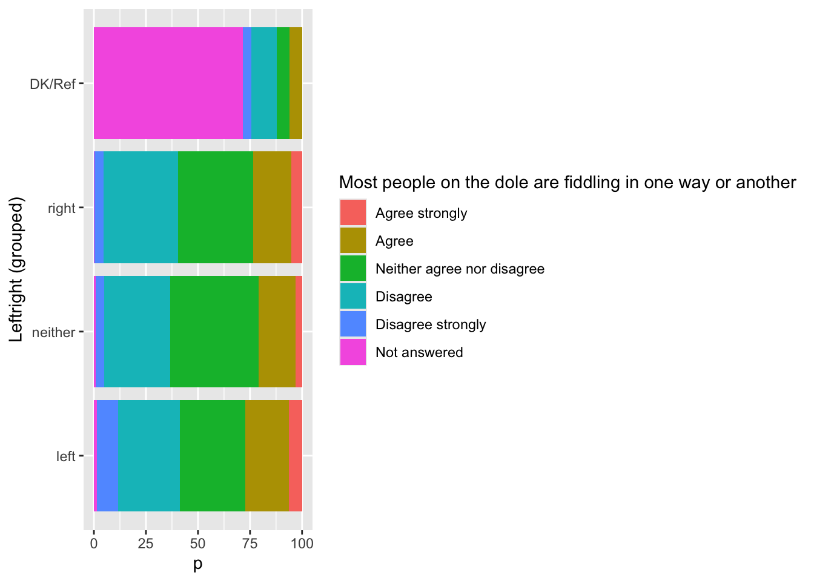
(plot <- dolefidl_x_leftrig2 %>%
group_by(leftrig2) %>%
mutate(cum_value = cumsum(p),
lab_pos = (cum_value - p / 2)) %>% # Without reverse of factor order, add 100 - before current formula
mutate(leftrig2 = map_chr(as.character(leftrig2), dynamic_str_wrap, plot_width = 7, num_labels = num_labels, char_width = 0.08, margin = 0.1)) %>%
mutate(leftrig2 = factor(leftrig2, levels = unique(leftrig2))) %>%
ggplot(aes(x = leftrig2, y = p, fill = fct_rev(dolefidl))) +
geom_col(position = "stack") +
geom_text(aes(label = round(p,0), y = lab_pos), size = 11, size.unit = "pt") + # vjust = -1,
coord_flip() +
theme_gray() +
labs(title = title_wrap,
x = x_lab_wrap,
y = y_lab_wrap) +
theme(
plot.margin = margin(1,1,1,1),
text = element_text(size = 11), # This seems to have no effect???
plot.title = element_text(size = 13, face = "bold"),
axis.title = element_text(size = 11, face = "bold"),
axis.text.x = element_text(margin = margin(b = 10), size = 11),
axis.text.y = element_text(margin = margin(l = 10), size = 11),
legend.position = "bottom",
legend.text = element_text(size = 11),
legend.title = element_text(size = 11, face = "bold"),
legend.margin = unit(0.1, "cm")
)) Warning: `legend.margin` must be specified using `margin()`
ℹ For the old behavior use `legend.spacing`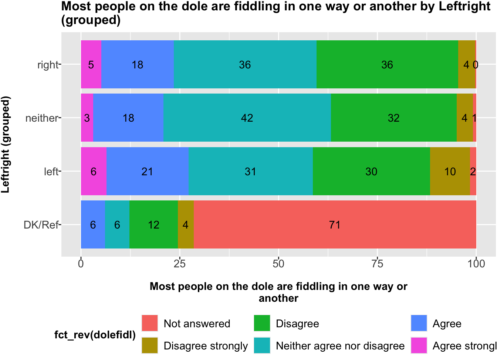
plot + scale_fill_brewer(palette = "Set2")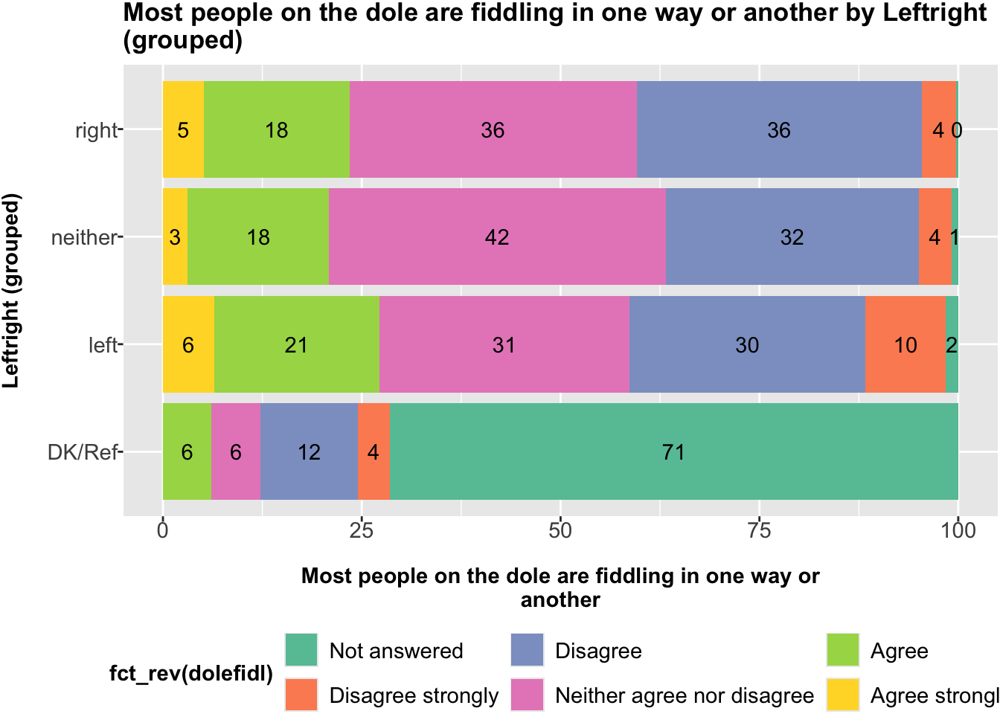
plot + scale_fill_brewer(palette = "Accent")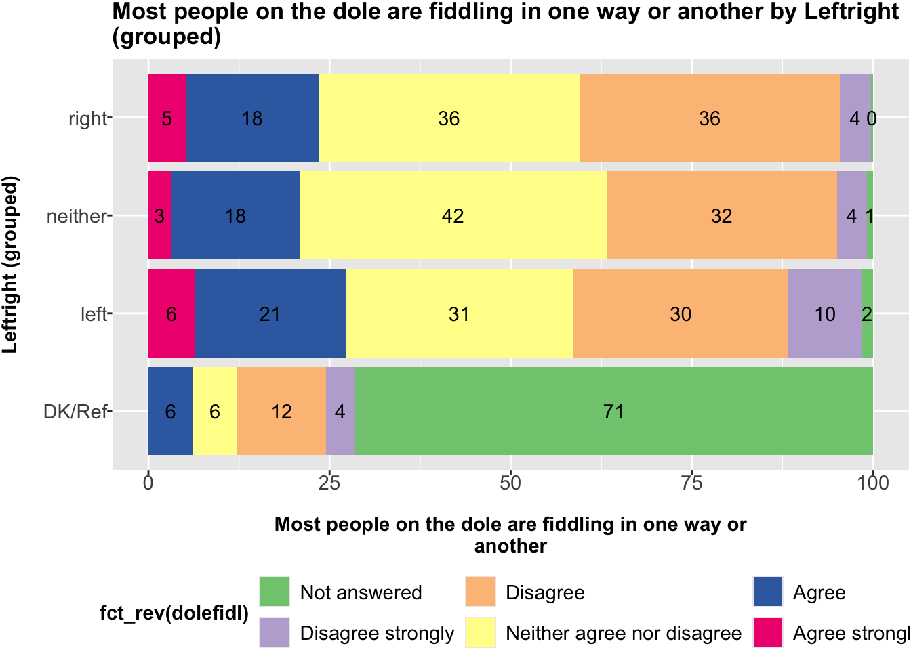
plot + scale_fill_brewer(palette = "Pastel1")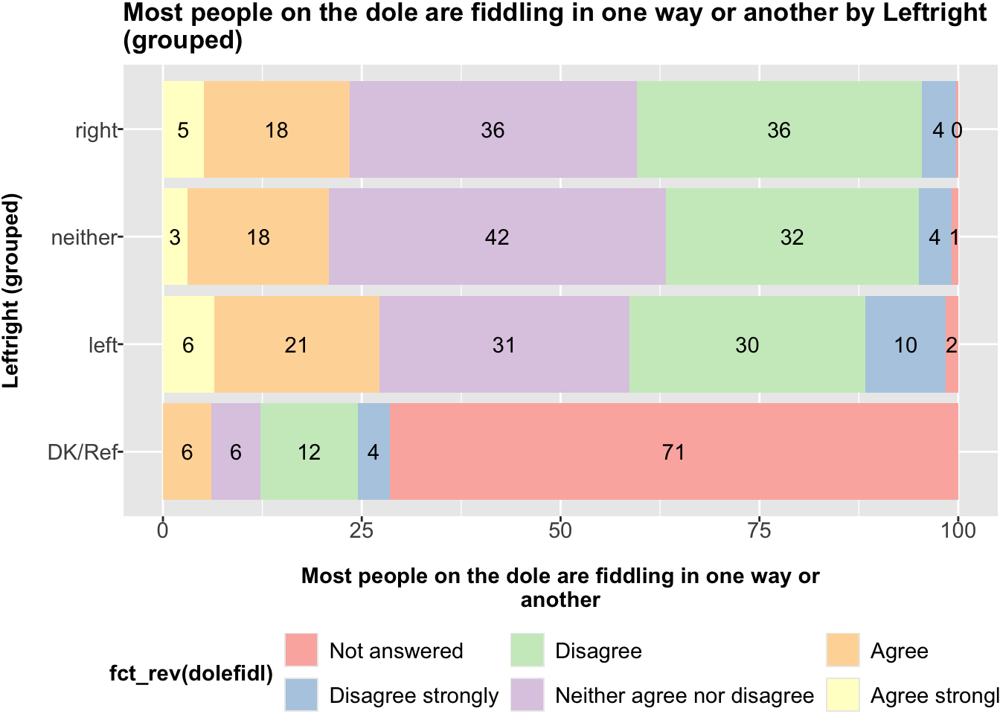
plot + scale_fill_manual(values = rev(c(nbl,"grey")))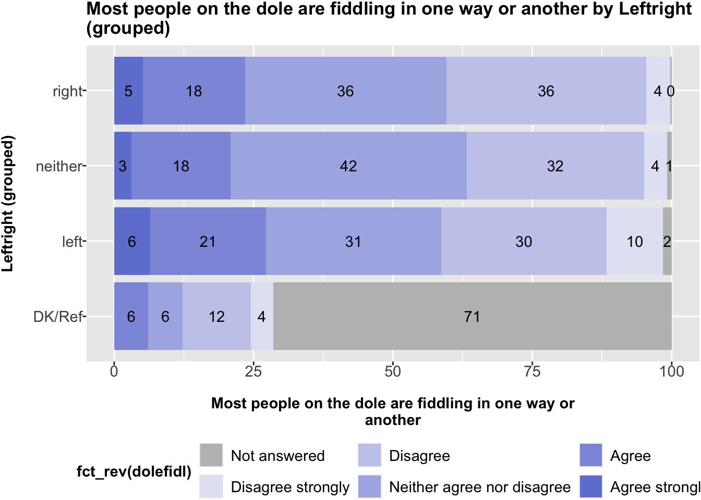
plot + scale_fill_manual(values = rev(c(npu,"grey")))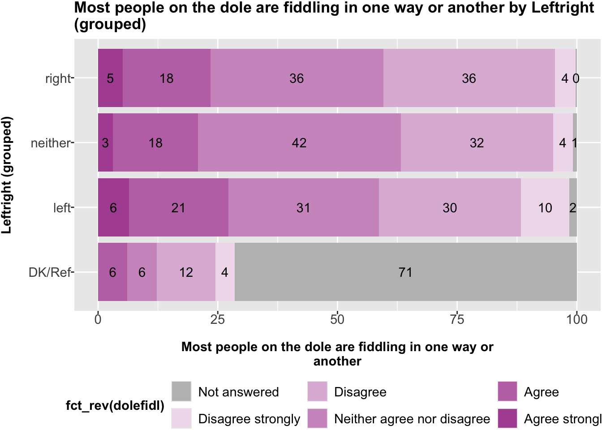
plot + scale_fill_manual(values = rev(c(nmg,"grey")))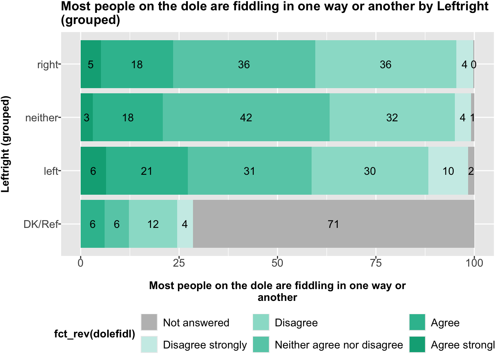
5.7.5 Exploration of str_wrap
Takes a positive integer giving the target line width (in number of characters).
A width less than or equal to 1 will put each word on its own line.
leftrigh %>%
filter(!is.na(dolefidl)) %>%
ggplot(aes(x = str_wrap(dolefidl, width = 16), y = leftrigh)) +
geom_col() +
labs(x = "dolefidl")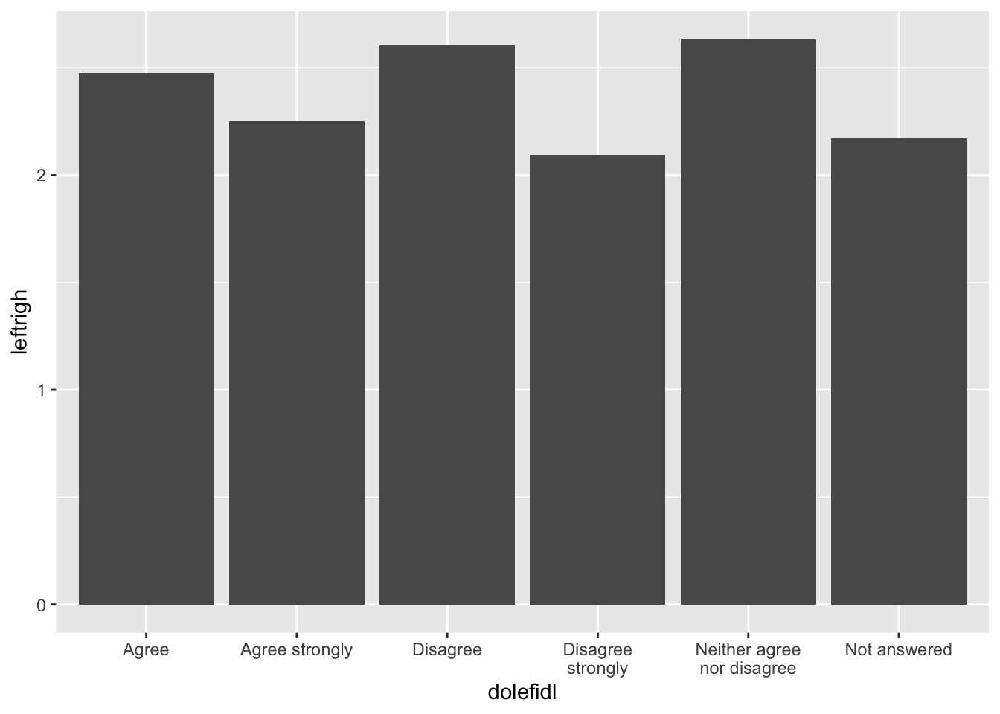
# A standard ggplot is 7 inches wide. # An inch is 2.54cm
library(grid)
cats <- levels(fct_drop(leftrigh$dolefidl))
text_grob <- textGrob(cats[2], gp=gpar(fontfamily="Sans", fontsize=11))
width <- grobWidth(text_grob)
height <- grobHeight(text_grob)
width_cm <- convertWidth(width, "cm", valueOnly = TRUE)Warning in grid.Call(C_textBounds, as.graphicsAnnot(x$label), x$x, x$y, : no
font could be found for family "Sans"
Warning in grid.Call(C_textBounds, as.graphicsAnnot(x$label), x$x, x$y, : no
font could be found for family "Sans"Warning in grid.Call(C_textBounds, as.graphicsAnnot(x$label), x$x, x$y, :
Unable to calculate text width/height (using zero)height_cm <- convertHeight(height, "cm", valueOnly = TRUE)Warning in grid.Call(C_textBounds, as.graphicsAnnot(x$label), x$x, x$y, : no
font could be found for family "Sans"
Warning in grid.Call(C_textBounds, as.graphicsAnnot(x$label), x$x, x$y, :
Unable to calculate text width/height (using zero)cat_lengths <- map_dbl(cats, ~convertWidth(grobWidth(textGrob(.x, gp=gpar(fontfamily="Arial", fontsize=11))),"cm", valueOnly = TRUE))
names(cat_lengths) <- cats
cat_lengths Agree strongly Agree
2.502087 1.035510
Neither agree nor disagree Disagree
4.616307 1.552980
Disagree strongly Not answered
3.019557 2.394272 sum(cat_lengths) / 2.54[1] 5.9530375.8 Functions
5.8.1 A frequency bar chart
Decide to use: age and where someone would go for advice, I can then use for a crosstab later as well.
bsa <- bsa %>% mutate(across(c(RAgecat5,hadvice), ~as_factor(.x)),
hadvice2 = fct_collapse(hadvice,
`Someone else` = c("Neighbour", "Someone I work with", "Someone else")))
bsa %>% count(hadvice2)# A tibble: 8 × 2
hadvice2 n
<fct> <int>
1 Close family member 649
2 More distant family member 51
3 Close friend 634
4 Someone else 73
5 No one 98
6 Can`t choose 38
7 Not answered 52
8 <NA> 2393bsa %>% count(RAgecat5)# A tibble: 4 × 2
RAgecat5 n
<fct> <int>
1 17-34 814
2 35-54 1379
3 55+ 1791
4 DK/Ref 4bsa %>% count(RAgecat5, hadvice)# A tibble: 33 × 3
RAgecat5 hadvice n
<fct> <fct> <int>
1 17-34 Close family member 114
2 17-34 More distant family member 10
3 17-34 Close friend 159
4 17-34 Neighbour 1
5 17-34 Someone I work with 3
6 17-34 Someone else 6
7 17-34 No one 7
8 17-34 Can`t choose 3
9 17-34 Not answered 6
10 17-34 <NA> 505
# ℹ 23 more rowsStep 1 will be to create a function to generate a table of data, to then plot.
(hadvice <- bsa %>%
filter(!is.na(hadvice2)) %>%
group_by(hadvice2) %>%
summarise(n = n()) %>%
mutate(p = 100 * (n / sum(n))))# A tibble: 7 × 3
hadvice2 n p
<fct> <int> <dbl>
1 Close family member 649 40.7
2 More distant family member 51 3.20
3 Close friend 634 39.7
4 Someone else 73 4.58
5 No one 98 6.14
6 Can`t choose 38 2.38
7 Not answered 52 3.26hadvice$x_label <- var_label(bsa$hadvice2)
hadvice# A tibble: 7 × 4
hadvice2 n p x_label
<fct> <int> <dbl> <chr>
1 Close family member 649 40.7 Who would you turn to first to give yo…
2 More distant family member 51 3.20 Who would you turn to first to give yo…
3 Close friend 634 39.7 Who would you turn to first to give yo…
4 Someone else 73 4.58 Who would you turn to first to give yo…
5 No one 98 6.14 Who would you turn to first to give yo…
6 Can`t choose 38 2.38 Who would you turn to first to give yo…
7 Not answered 52 3.26 Who would you turn to first to give yo…freq <- function(dat, var) {
x_var <- as.character(substitute(var))
table <- dat %>%
filter(!is.na({{var}})) %>%
group_by({{var}}) %>%
summarise(n = n()) %>%
mutate(p = 100 * (n / sum(n)))
table$x_label <- var_label(dat[[x_var]])
return(table)
}
hadvice <- freq(dat = bsa, var = hadvice2)
hadvice# A tibble: 7 × 4
hadvice2 n p x_label
<fct> <int> <dbl> <chr>
1 Close family member 649 40.7 Who would you turn to first to give yo…
2 More distant family member 51 3.20 Who would you turn to first to give yo…
3 Close friend 634 39.7 Who would you turn to first to give yo…
4 Someone else 73 4.58 Who would you turn to first to give yo…
5 No one 98 6.14 Who would you turn to first to give yo…
6 Can`t choose 38 2.38 Who would you turn to first to give yo…
7 Not answered 52 3.26 Who would you turn to first to give yo…Step 2: Decant that data into a ggplot of approved type
dynamic_str_wrap <- function(text, plot_width = 7, num_labels = 1, char_width = 0.1, margin = 0.1) {
max_label_width <- (plot_width * (1 - margin)) / num_labels
max_chars <- max_label_width / char_width
str_wrap(text, width = floor(max_chars))
}
wrap_titles <- function(title, plot_width = 7, char_width = 0.09) {
max_chars <- floor(plot_width / char_width)
wrapped_title <- str_wrap(title, width = max_chars)
return(wrapped_title)
}
num_labels <- length(levels(fct_drop(hadvice$hadvice2)))
x_lab <- unique(hadvice[,4])
x_lab_wrap <- wrap_titles(x_lab)
# y_lab <- var_label(bsa[[names(hadvice[2])]])
# y_lab_wrap <- wrap_titles(y_lab, plot_width = 5)
title <- paste0(x_lab)
title_wrap <- wrap_titles(title)
buffer <- mean(hadvice$p, na.rm = TRUE) / 4
ylim <- c(0, ceiling(max(hadvice$p, na.rm = TRUE) + buffer))
(plot <- hadvice %>%
filter(!is.na(hadvice2)) %>%
mutate(hadvice2 = map_chr(as.character(hadvice2), dynamic_str_wrap, plot_width = 7, num_labels = num_labels, char_width = 0.08, margin = 0.1)) %>%
mutate(hadvice2 = factor(hadvice2, levels = unique(hadvice2))) %>%
ggplot(aes(x = hadvice2, y = p)) +
geom_col() +
geom_text(aes(label = round(p, 1)), vjust = -1.5, size = 11, size.unit = "pt") +
theme_gray() +
labs(title = title_wrap,
x = NULL,
y = "%"
) +
coord_cartesian(ylim = ylim) +
theme(
plot.margin = margin(1,1,1,1),
text = element_text(size = 11), # This seems to have no effect???
plot.title = element_text(size = 13, face = "bold"),
axis.title = element_text(size = 11, face = "bold"),
axis.title.y = element_text(angle = 0, vjust = 0.5),
axis.text.x = element_text(margin = margin(b = 10), size = 11),
axis.text.y = element_text(margin = margin(l = 10), size = 11)
)) 
** Step 3:** Decant that bar chart code into a function
bar <- function(dat, colour = NULL, palette = NULL) {
# Define some potential custom palettes
nbl <- nc_colours[,1] # extract blue
npi <- nc_colours[,2]
nmg <- nc_colours[,3]
npu <- nc_colours[,4]
nor <- nc_colours[,5]
nbl_oppo2 <- nc_colours[c(1,4),1] # extract blue
npi_oppo2 <- nc_colours[c(1,4),2]
nmg_oppo2 <- nc_colours[c(1,4),3]
npu_oppo2 <- nc_colours[c(1,4),4]
nor_oppo2 <- nc_colours[c(1,4),5]
nbl_seq3 <- nc_colours[c(1,3,5),1] # extract blue
npi_seq3 <- nc_colours[c(1,3,5),2]
nmg_seq3 <- nc_colours[c(1,3,5),3]
npu_seq3 <- nc_colours[c(1,3,5),4]
nor_seq3 <- nc_colours[c(1,3,5),5]
ncl_5to1 <- unlist(c(as.vector(nc_colours[1,]), as.vector(nc_colours[2,]), as.vector(nc_colours[3,]), as.vector(nc_colours[4,]), as.vector(nc_colours[5,]))) %>% unname
ncl_oppo2 <- nc_colours %>% slice(1,4) %>% pivot_longer(cols = everything()) %>% arrange(name) %>% select(-name) %>% as_vector() %>% unname
ncl_seq3 <- nc_colours %>% slice(1,3,5) %>% pivot_longer(cols = everything()) %>% arrange(name) %>% select(-name) %>% as_vector() %>% unname
dynamic_str_wrap <- function(text, plot_width = 7, num_labels = 1, char_width = 0.1, margin = 0.1) {
max_label_width <- (plot_width * (1 - margin)) / num_labels
max_chars <- max_label_width / char_width
str_wrap(text, width = floor(max_chars))
}
wrap_titles <- function(title, plot_width = 7, char_width = 0.09) {
max_chars <- floor(plot_width / char_width)
wrapped_title <- str_wrap(title, width = max_chars)
return(wrapped_title)
}
num_labels <- length(levels(fct_drop(hadvice[[1]])))
x_lab <- unique(dat[,4])
x_lab_wrap <- wrap_titles(x_lab)
# y_lab <- var_label(bsa[[names(hadvice[2])]])
# y_lab_wrap <- wrap_titles(y_lab, plot_width = 5)
title <- paste0(x_lab)
title_wrap <- wrap_titles(title)
buffer <- mean(dat$p, na.rm = TRUE) / 4
ylim <- c(0, ceiling(max(dat$p, na.rm = TRUE) + buffer))
x_var <- names(dat)[1]
(plot <- dat %>%
filter(!is.na(1)) %>%
mutate(!!sym(x_var) := map_chr(as.character(!!sym(x_var)), dynamic_str_wrap, plot_width = 7, num_labels = num_labels, char_width = 0.08, margin = 0.1)) %>%
mutate(!!sym(x_var) := factor(!!sym(x_var), levels = unique(!!sym(x_var)))) %>%
ggplot(aes(x = !!sym(x_var), y = p)) +
geom_col() +
geom_text(aes(label = round(p, 1)), vjust = -1.5, size = 11, size.unit = "pt") +
theme_gray() +
labs(title = title_wrap,
x = NULL,
y = "%"
) +
coord_cartesian(ylim = ylim) +
theme(
plot.margin = margin(1,1,1,1),
text = element_text(size = 11), # This seems to have no effect???
plot.title = element_text(size = 13, face = "bold"),
axis.title = element_text(size = 11, face = "bold"),
axis.title.y = element_text(angle = 0, vjust = 0.5),
axis.text.x = element_text(margin = margin(b = 10), size = 11),
axis.text.y = element_text(margin = margin(l = 10), size = 11)
))
if (!is_null(colour)) {
if(colour == "pal") {
plot <- plot +
geom_col(aes(fill = !!sym(x_var))) +
theme(legend.position = "none")
if(!is_null(palette)) {
if (palette %in% rownames(RColorBrewer::brewer.pal.info)) {
plot <- plot + scale_fill_brewer(palette = palette)
} else {
plot <- plot + scale_fill_manual(values = get(palette))
}
}
} else {
plot <- plot + geom_col(fill = colour)
}
}
return(plot)
}
bar(hadvice)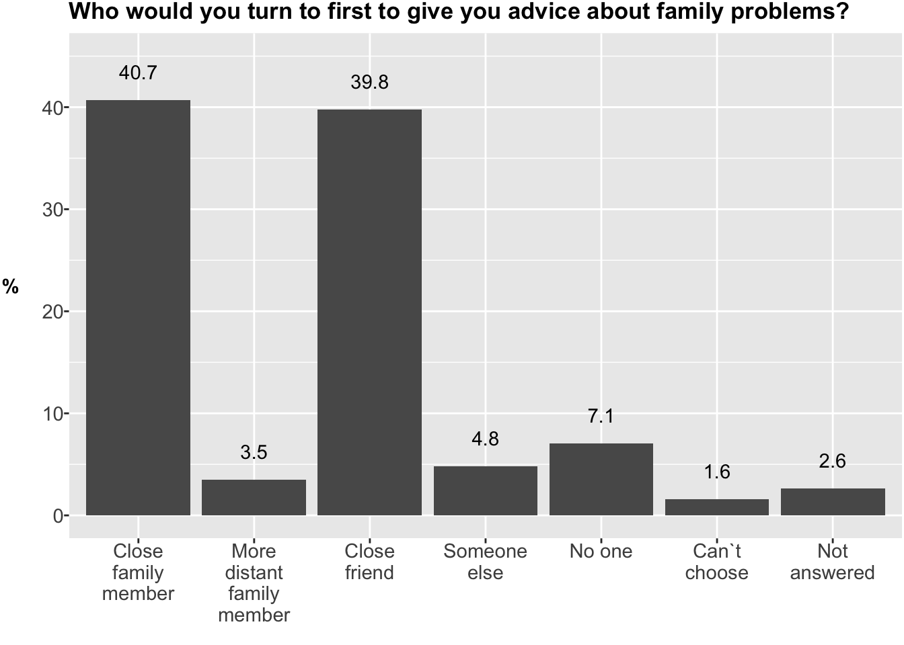
bar(hadvice, colour = "pal")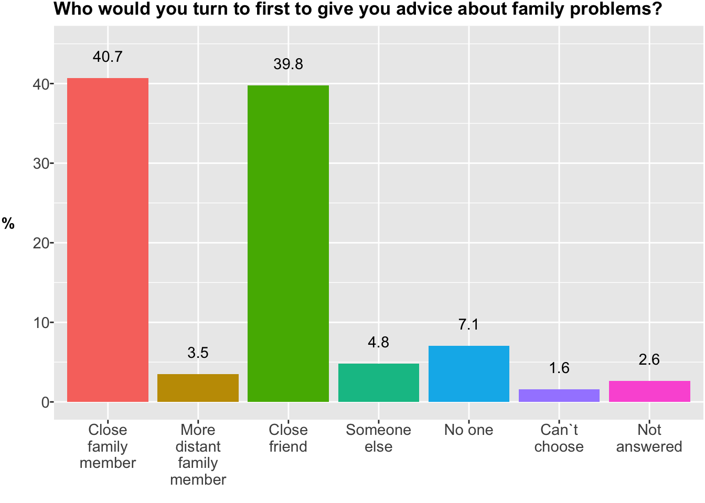
bar(hadvice, colour = "pal", palette = "Set2")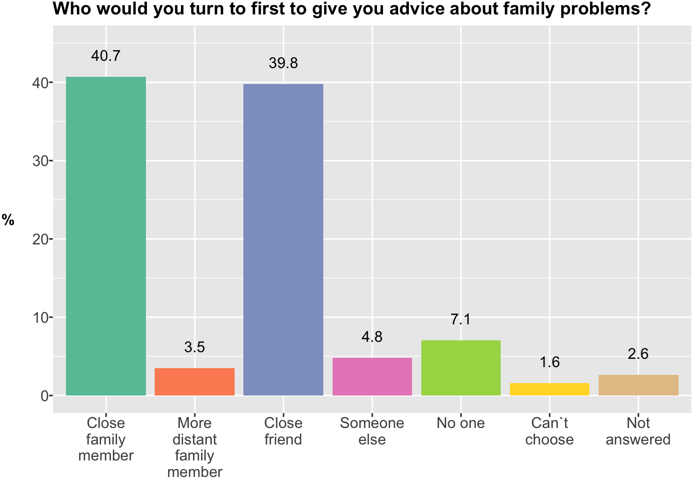
bar(hadvice, colour = "pal", palette = "Accent")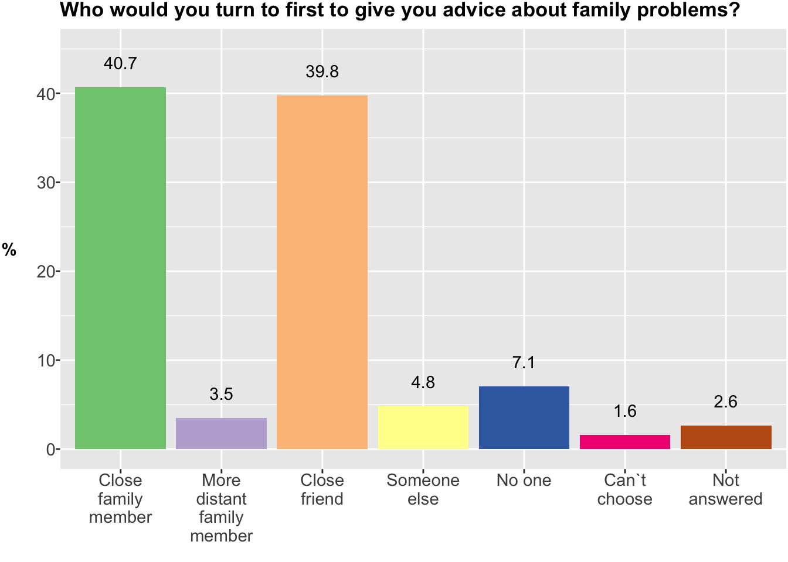
bar(hadvice, colour = "pal", palette = "ncl_oppo2")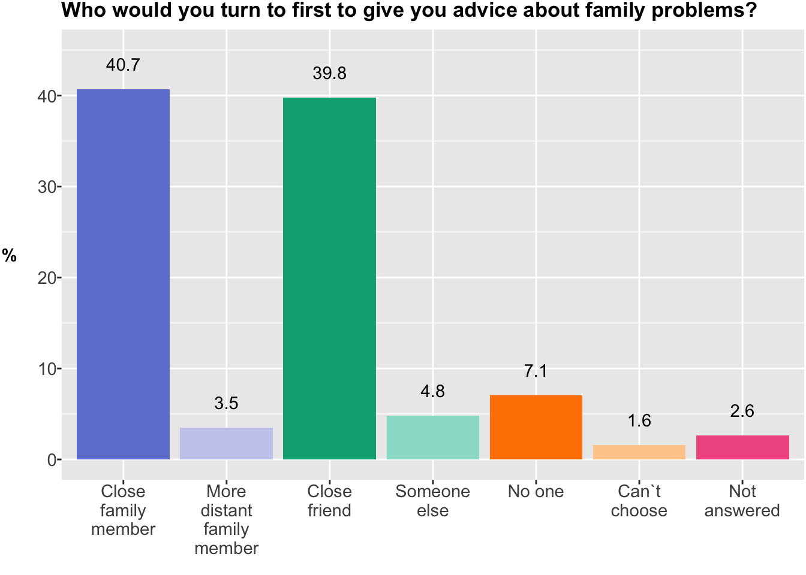
bar(hadvice, colour = "#7082d4")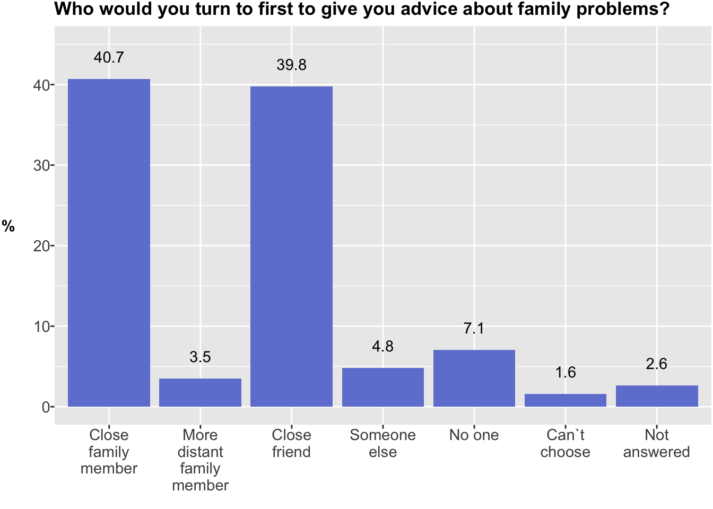
Step 4: see if it works well with other variables…
bsa %>% freq(RAgecat5) %>%
bar(colour = "pal")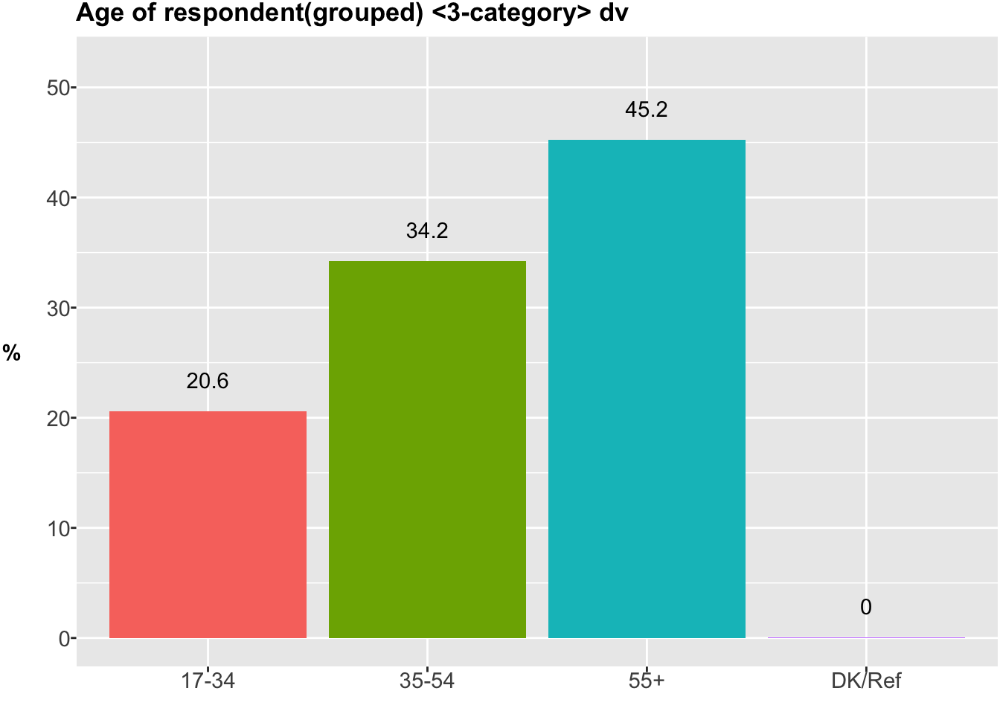
bsa %>% freq(RAgecat5) %>% bar(colour = "pal", palette = "Set2")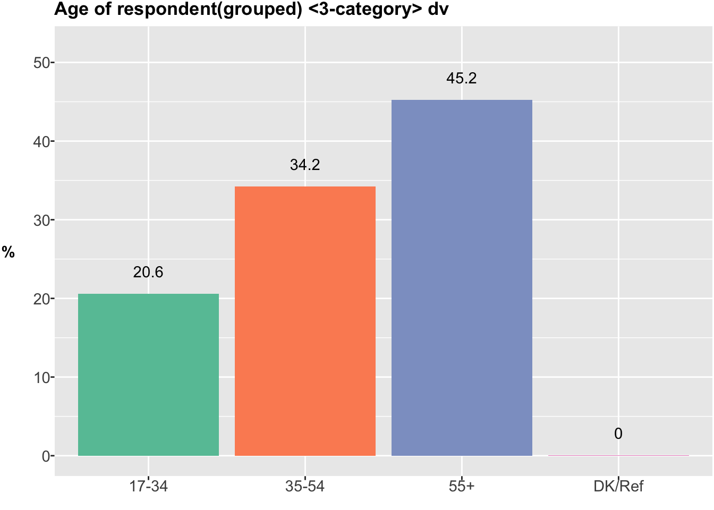
bsa %>% freq(RAgecat5) %>% bar(colour = "pal", palette = "nbl")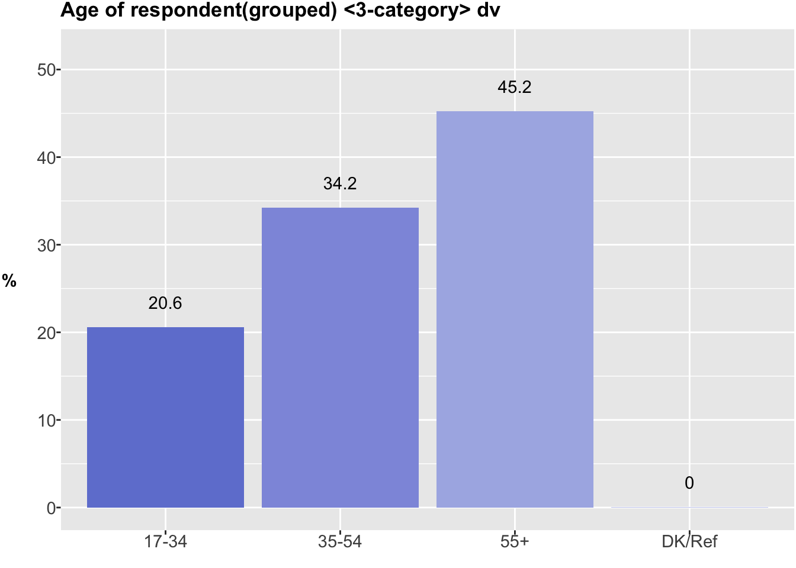
bsa %>% freq(RAgecat5) %>% bar(colour = "pal", palette = "npi")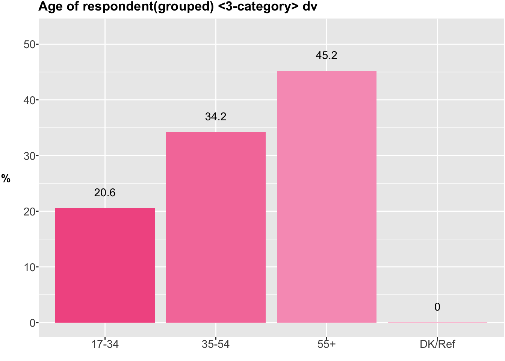
bsa %>% freq(RAgecat5) %>% bar(colour = "pal", palette = "YlGn")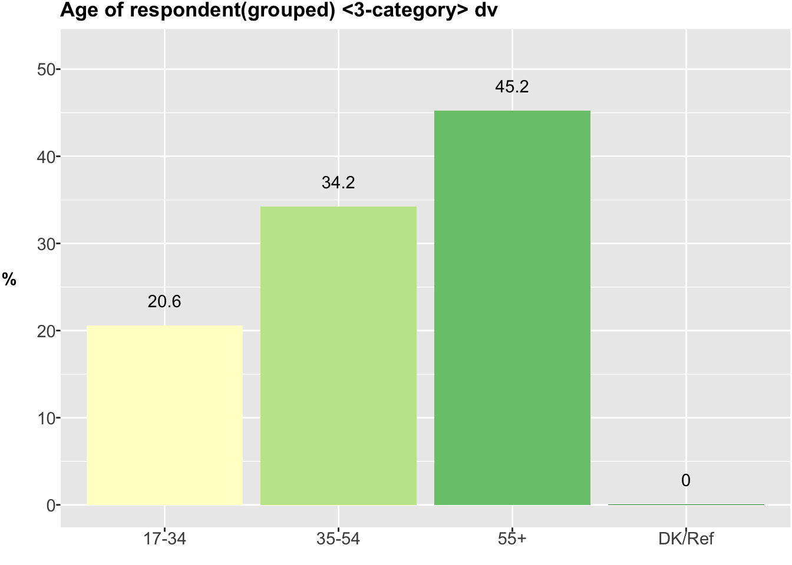
bsa %>% freq(RAgecat5) %>% bar(colour = "pal", palette = "OrRd")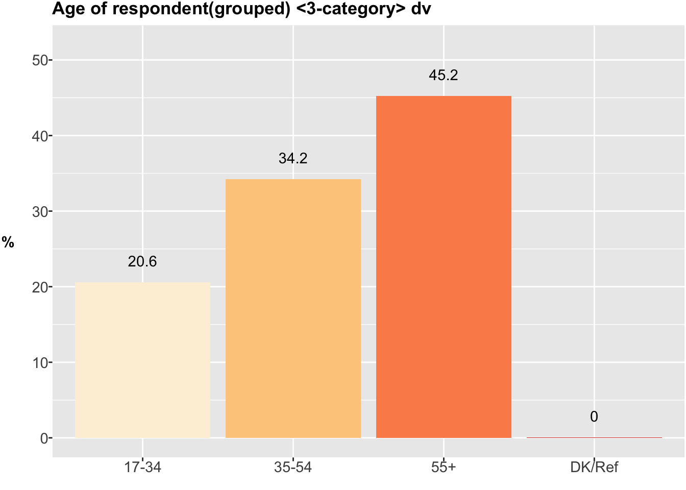
5.8.2 X by Y bar chart, labelling Y values
# Using the leftrigh table defined above...
leftrigh# A tibble: 7 × 3
dolefidl leftrigh n
<fct> <dbl> <int>
1 Agree strongly 2.36 172
2 Agree 2.50 612
3 Neither agree nor disagree 2.64 1170
4 Disagree 2.55 967
5 Disagree strongly 2.07 265
6 Not answered 2.13 72
7 <NA> NaN 730leftrigh <- bsa %>%
filter(!is.na(dolefidl)) %>%
mutate(dolefidl = fct_drop(as_factor(dolefidl))) %>%
group_by(dolefidl) %>%
summarise(leftrigh = mean(leftrigh, na.rm = TRUE), n = n())
leftrigh$x_label <- var_label(bsa$dolefidl)
leftrigh$y_label <- var_label(bsa$leftrigh)
leftrigh# A tibble: 6 × 5
dolefidl leftrigh n x_label y_label
<fct> <dbl> <int> <chr> <chr>
1 Agree strongly 2.36 172 Most people on the dole are… Left-r…
2 Agree 2.53 612 Most people on the dole are… Left-r…
3 Neither agree nor disagree 2.66 1170 Most people on the dole are… Left-r…
4 Disagree 2.61 967 Most people on the dole are… Left-r…
5 Disagree strongly 2.15 265 Most people on the dole are… Left-r…
6 Not answered 5.47 72 Most people on the dole are… Left-r…mean_func <- function(dat, x, y) {
x_var <- as.character(substitute(x))
y_var <- as.character(substitute(y))
table <- dat %>%
filter(!is.na({{x}})) %>%
mutate(!!sym(x_var) := fct_drop(as_factor({{x}}))) %>%
group_by({{x}}) %>%
summarise(!!sym(y_var) := mean({{y}}, na.rm = TRUE), n = n())
table$x_label <- var_label(dat[[x_var]])
table$y_label <- var_label(dat[[y_var]])
return(table)
}
leftrigh <- mean_func(dat = bsa, x = dolefidl, y = leftrigh)plot_xy <- function(table,
.fill = NULL,
.pal_var = NULL) {
# Define some potential custom palettes
nbl <- nc_colours[,1] # extract blue
npi <- nc_colours[,2]
nmg <- nc_colours[,3]
npu <- nc_colours[,4]
nor <- nc_colours[,5]
nbl_oppo2 <- nc_colours[c(1,4),1] # extract blue
npi_oppo2 <- nc_colours[c(1,4),2]
nmg_oppo2 <- nc_colours[c(1,4),3]
npu_oppo2 <- nc_colours[c(1,4),4]
nor_oppo2 <- nc_colours[c(1,4),5]
nbl_seq3 <- nc_colours[c(1,3,5),1] # extract blue
npi_seq3 <- nc_colours[c(1,3,5),2]
nmg_seq3 <- nc_colours[c(1,3,5),3]
npu_seq3 <- nc_colours[c(1,3,5),4]
nor_seq3 <- nc_colours[c(1,3,5),5]
ncl_5to1 <- unlist(c(as.vector(nc_colours[1,]), as.vector(nc_colours[2,]), as.vector(nc_colours[3,]), as.vector(nc_colours[4,]), as.vector(nc_colours[5,]))) %>% unname
ncl_oppo2 <- nc_colours %>% slice(1,4) %>% pivot_longer(cols = everything()) %>% arrange(name) %>% select(-name) %>% as_vector() %>% unname
ncl_seq3 <- nc_colours %>% slice(1,3,5) %>% pivot_longer(cols = everything()) %>% arrange(name) %>% select(-name) %>% as_vector() %>% unname
dynamic_str_wrap <- function(text, plot_width = 7, num_labels = 1, char_width = 0.1, margin = 0.1) {
max_label_width <- (plot_width * (1 - margin)) / num_labels
max_chars <- max_label_width / char_width
str_wrap(text, width = floor(max_chars))
}
wrap_titles <- function(title, plot_width = 7, char_width = 0.09) {
max_chars <- floor(plot_width / char_width)
wrapped_title <- str_wrap(title, width = max_chars)
return(wrapped_title)
}
num_labels <- length(levels(fct_drop(table[[1]])))
x_lab <- unique(table$x_label)
x_lab_wrap <- wrap_titles(x_lab)
y_lab <- unique(table$y_label)
y_lab_wrap <- wrap_titles(y_lab, plot_width = 5)
title <- paste0(y_lab, " by ", x_lab)
title_wrap <- wrap_titles(title)
buffer <- mean(table[[2]], na.rm = TRUE) / 4
ylim <- c(0, ceiling(max(table[[2]], na.rm = TRUE) + buffer))
x_var <- names(table)[1]
y_var <- names(table)[2]
(plot <- table %>%
filter(!is.na(!!sym(x_var))) %>%
mutate(!!sym(x_var) := map_chr(as.character(!!sym(x_var)), dynamic_str_wrap, plot_width = 7, num_labels = num_labels, char_width = 0.08, margin = 0.1)) %>%
mutate(!!sym(x_var) := factor(!!sym(x_var), levels = unique(!!sym(x_var)))) %>%
ggplot(aes(x = !!sym(x_var), y = !!sym(y_var))) +
geom_col() +
geom_text(aes(label = round(!!sym(y_var), 1)), vjust = -1.5, size = 11, size.unit = "pt") +
theme_gray() +
labs(title = title_wrap,
x = x_lab_wrap,
y = y_lab_wrap) +
coord_cartesian(ylim = ylim) +
theme(
plot.margin = margin(1,1,1,1),
text = element_text(size = 11), # This seems to have no effect???
plot.title = element_text(size = 13, face = "bold"),
axis.title = element_text(size = 11, face = "bold"),
axis.text.x = element_text(margin = margin(b = 10), size = 11),
axis.text.y = element_text(margin = margin(l = 10), size = 11)
))
if (!is.null(.fill)) {
plot <- plot + geom_col(fill = .fill) # ggplot blue
}
if (!is.null(.pal_var)) {
plot <- plot + geom_col(aes(fill = !!sym(x_var))) +
theme(legend.position = "none")
if(is.character(.pal_var)) {
if (.pal_var %in% rownames(RColorBrewer::brewer.pal.info)) {
plot <- plot + scale_fill_brewer(palette = .pal_var)
} else {
plot <- plot + scale_fill_manual(values = get(.pal_var))
}
}
}
return(list(num_labels, x_lab_wrap, y_lab_wrap, title_wrap, buffer, ylim, plot))
}
plot_xy(leftrigh)[[1]]
[1] 6
[[2]]
[1] "Most people on the dole are fiddling in one way or another"
[[3]]
[1] "Left-right scale(redistrb to indust4) dv"
[[4]]
[1] "Left-right scale(redistrb to indust4) dv by Most people on the dole are\nfiddling in one way or another"
[[5]]
[1] 0.7403751
[[6]]
[1] 0 7
[[7]]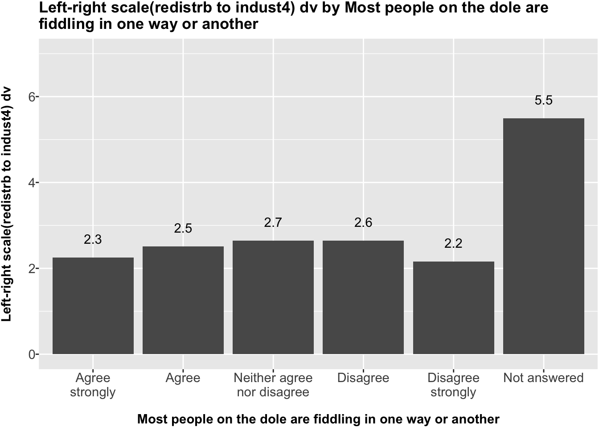
plot_xy(leftrigh, .fill = "#619CFF")[[1]]
[1] 6
[[2]]
[1] "Most people on the dole are fiddling in one way or another"
[[3]]
[1] "Left-right scale(redistrb to indust4) dv"
[[4]]
[1] "Left-right scale(redistrb to indust4) dv by Most people on the dole are\nfiddling in one way or another"
[[5]]
[1] 0.7403751
[[6]]
[1] 0 7
[[7]]plot_xy(leftrigh, .pal_var = TRUE)[[1]]
[1] 6
[[2]]
[1] "Most people on the dole are fiddling in one way or another"
[[3]]
[1] "Left-right scale(redistrb to indust4) dv"
[[4]]
[1] "Left-right scale(redistrb to indust4) dv by Most people on the dole are\nfiddling in one way or another"
[[5]]
[1] 0.7403751
[[6]]
[1] 0 7
[[7]]plot_xy(leftrigh, .pal_var = "Set2")[[1]]
[1] 6
[[2]]
[1] "Most people on the dole are fiddling in one way or another"
[[3]]
[1] "Left-right scale(redistrb to indust4) dv"
[[4]]
[1] "Left-right scale(redistrb to indust4) dv by Most people on the dole are\nfiddling in one way or another"
[[5]]
[1] 0.7403751
[[6]]
[1] 0 7
[[7]]plot_xy(leftrigh, .pal_var = "ncl_oppo2")[[1]]
[1] 6
[[2]]
[1] "Most people on the dole are fiddling in one way or another"
[[3]]
[1] "Left-right scale(redistrb to indust4) dv"
[[4]]
[1] "Left-right scale(redistrb to indust4) dv by Most people on the dole are\nfiddling in one way or another"
[[5]]
[1] 0.7403751
[[6]]
[1] 0 7
[[7]]